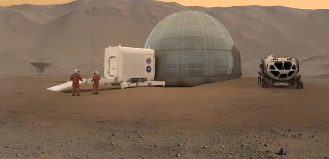
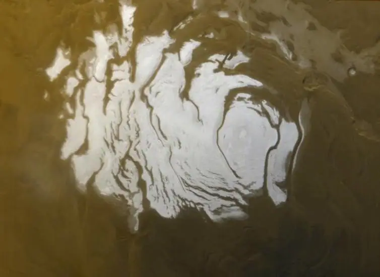

Articles ·
Sorry Elon Musk, But It’s Now Clear That Colonizing Mars Is Unlikely — And A Bad Idea

This article was originally published at The Conversation. The publication contributed the article to Space.com’s Expert Voices: Op-Ed & Insights.
Space X and Tesla founder Elon Musk has a vision for colonising Mars, based on a big rocket, nuclear explosions and an infrastructure to transport millions of people there. This was seen as highly ambitious but technically challengingin several ways. Planetary protection rules and the difficulties of terraforming (making the planet hospitable by, for example, warming it up) and dealing with the harsh radiation were quoted as severe obstacles.
Undeterred, Musk took a first step towards his aim in February this year with the launch of a Tesla roadster car into an orbit travelling beyond Mars on the first Falcon Heavy rocket. This dramatically illustrated the increasing launch capability for future missions made available by partnerships between commercial and government agencies.
- MORE
Credit: NASA/Clouds AO/SEArch
This article was originally published at The Conversation. The publication contributed the article to Space.com’s Expert Voices: Op-Ed & Insights.
Space X and Tesla founder Elon Musk has a vision for colonising Mars, based on a big rocket, nuclear explosions and an infrastructure to transport millions of people there. This was seen as highly ambitious but technically challengingin several ways. Planetary protection rules and the difficulties of terraforming (making the planet hospitable by, for example, warming it up) and dealing with the harsh radiation were quoted as severe obstacles.
Undeterred, Musk took a first step towards his aim in February this year with the launch of a Tesla roadster car into an orbit travelling beyond Mars on the first Falcon Heavy rocket. This dramatically illustrated the increasing launch capability for future missions made available by partnerships between commercial and government agencies.
But six months later, the plans have started to look more like fantasy. We have since learned that there could be life beneath Mars’ surface and that it may be impossible to terraform its surface.
The possibility that there currently could be life on the red planet was raised last week as scientists reported the discovery of a salt water lake beneath Mars’ surface. The lake would be 1.5km below the south polar cap and at least 20km in diameter. This was found from analysis of subsurface radar data from the Mars Express spacecraft. The water is thought to be briny, with the likely magnesium, calcium, and sodium perchlorate salts acting as an antifreeze down to temperatures of perhaps 200K (-73.15°C).

Credit: NASA/JPL-Caltech/MSSS
This is exciting as it is the first definitive detection of liquid water on Mars, and it is possible that there may be further deep lakes elsewhere on the planet. This means there is a real possibility of current life on Mars.
We already knew life could have existed on Mars in the past. There are several pieces of evidence indicating that Mars was habitable 3.8-4 billion years ago. Data from recent missions – including Mars Global Surveyor, Odyssey, Opportunity, Curiosity and Mars Express – have provided mounting evidence that water was present on the surface in streams and lakes with reasonable acidity and that the right chemistry for life to evolve existed there around the time that life was evolving on Earth.
But Mars lost its magnetic field, which would have protected life from harsh radiation from space, 3.8 billion years ago. This also meant its atmosphere started leaking into space, making it increasingly inhospitable. So living organisms may not have survived.
But while the new discovery may fuel aspiring colonisers’ dreams that the water in the subsurface lake might be usable to sustain a human presence, the reality is very different.
The risk of contamination means we shouldn’t send humans there until we know for sure whether there is naturally evolved life – something that could take years to decades. We will need to drill under the surface and to analyse samples, either in-situ or from material returned to Earth, and find suitable biomarkers to be sure.
Terraforming plans crushed?
Perhaps even more damning, the long-suggested idea of terraforming Mars is now firmly locked in the realm of science fiction. Musk has previously indicated that he wants to terraform the planet to make it more Earth-like, so you can “eventually walk around outside without anything on.” This would most easily be done by producing an atmosphere made of heat-trapping greenhouse gases locked in the planet’s ice in order to raise its temperature and pressure. Musk has suggested that we could drop thermonuclear bombson the ice at its poles in order to heat it up to release the carbon dioxide.
But according to a new study, published in Nature Astronomy, Mars has lost so much of its potential greenhouse gases to space over billions of years that there is now no possibility of transforming the remaining atmosphere into a breathable one with available technology.
The study is based on measurements of the recent escape rate of gases to space measured over the last 15 years by Mars Express and the last four years by MAVEN. This can tell us how much effective greenhouse gases, carbon dioxide and water are available at Mars. The measurements, combined with knowledge of the inventories of carbon dioxide and water on Mars from recent space missions, show that greenhouses gases locked in the ice caps are not enough to provide the necessary heating.
More may be available deep within the planet but extracting that is well beyond today’s technology. Also, the atmosphere is still being lost due to the lack of a magnetic field, so that would need to be somehow slowed to maintain any changes achieved by terraforming. This means that potential explorers would need to use heavy, airtight walls, roofs or buildings to provide the right atmosphere and the required screening from cosmic radiation.
While Musk may be disappointed by these new results, most Mars scientists are breathing a sigh of relief. There may be present or past life on Mars, and we can now focus on finding it.
We will be searching for signs of life with the ESA-Russian ExoMars 2020 rover, and the NASA Mars 2020 mission will gather samples for eventual return to Earthbound laboratories by around 2030. The results of all this may tell us if there was, is or could be life elsewhere. In our solar system, the best targets are Mars, Saturn’s moons Enceladus and Titan and Jupiter’s moon Europa. And these just hint of the potential for life on the many planets beyond our own solar system.
Mars is bright in our skies this week, the brightest since 2003. The red planet is never far from our thoughts, whether as a potential cradle for life beyond Earth or as a target for humans in the future. We live in exciting times when it comes to space exploration. So let’s not spoil one of the largest and most fundamental experiments for humankind by letting dreams of colonisation go too far – at least until we know whether there is life.
Andrew Coates, Professor of Physics, Deputy Director (Solar System) at the Mullard Space Science Laboratory, UCL
Editor’s Note: This article was corrected to reflect that Titan is a moon of Saturn.
This article was originally published on The Conversation. Read the original article. Follow all of the Expert Voices issues and debates — and become part of the discussion — on Facebook, Twitter and Google +. The views expressed are those of the author and do not necessarily reflect the views of the publisher. This version of the article was originally published on Space.com.